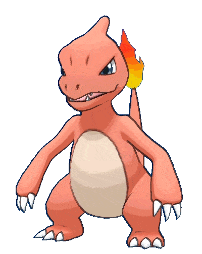

-
Bulbasaur #001

- Grama
- Veneno
Pokémon inicial da região de Kanto, possui um bulbo nas costas que pode evoluir para uma flor.Em batalhas é capaz de causar danos significativos.
-
Ivysaur #002

- Grama
- Veneno
Pokémon evolução de Bulbasaur. É conhecido por sua aparência distinta com manchas vermelhas nas costas e uma flor no centro do corpo.
-
Venosaur #003

- Grama
- Veneno
Pokémon final da evolução do Bulbasaur. Conhecido por possuir uma flor grande nas costas, capaz de usar para ataques poderosos.
-
Charmander #004

- Fogo
Pokémon inicial da região de Kanto. Lutador ágil e poderoso, capaz de causar grandes danos com ataques como Flamethrower e Fire Spin.
-
Charmeleon #005
- Fogo
Pokémon de tipo Fogo, evolução de Charmander. É um lutador capaz de causar danos aos oponentes com seus ataques como Fire Fang e Flame Burst.
-
Charizard #006

- Fogo
Pokémon final da evolução da linha de Charmander. Conhecido por sua parência, com grandes asas e uma chama ardente na ponta da cauda.
-
Squirtle #007

- Água
Pokémon inicial da região de Kanto. É Conhecido por sua aparência distinta com uma concha nas costas e olhos grandes. Lutador ágil e defensivo.
-
Wartortle #008

- Água
Pokémon de tipo Água. Conhecido por sua possuir uma cauda grande e uma concha mais desenvolvida nas costas. Pode evoluir para Blastoise.
-
Blastoise #009

- Água
Pokémon final da evolução da linha de Squirtle. Conhecido por possuir duas torres de água nas costas. Capaz de evoluir para Mega Blastoise.
-
Caterpie #010

- Água
Pokémon inseto da região de Kanto. Conhecido por sua aparência comum de uma lagarta verde com manchas amarelas. Pode evoluir para Metapod.